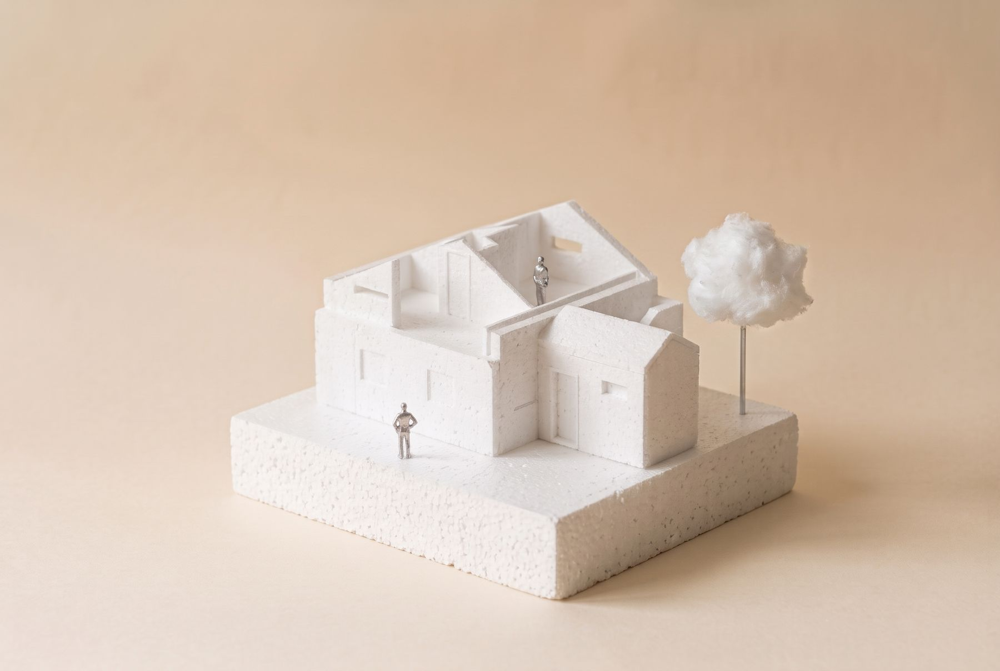
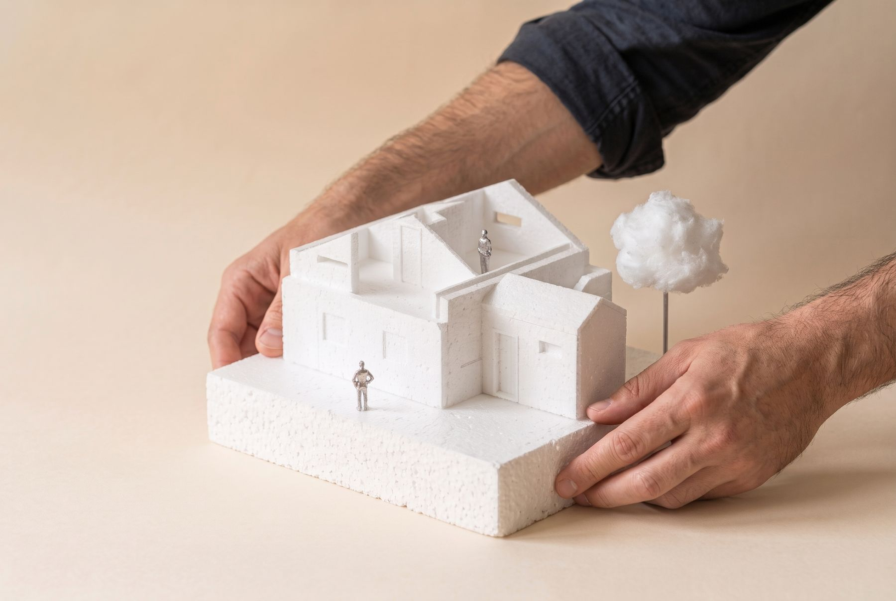

House renovation in Zeeland
The renovation of a small freestanding house in the garden of a former residential complex, to gain usable space under the roof.
The house belongs to a residential complex built in the late 1940s, after the Second World War, for elderly people: a three-storey, U-shaped apartment block around a central garden. The house is not part of the block. It stands on its own in the middle of the garden, with nothing attached to it except a row of storage sheds at the back. It was originally the complex's laundry, with a small office for its management.
Over time the complex and the house changed use. Today the house belongs to our clients, who asked us for a renovation to simplify it and make better use of the space.
Although it is freestanding, the house is small: about 72 m² over the ground and first floors. Upstairs, the space under the pitched roof is limited.
The project mainly simplifies the first floor, so that its two bedrooms are more efficient and more comfortable to live in. To achieve this, the stair moves and now arrives in the centre of the house, on its axis, right under the ridge. The landing takes the highest part, leaving the lower spaces under the roof for the beds.
The heating is also renewed: the new boiler moves to the ground floor, and the kitchen and other elements are relocated to make room for the stair. Even so, it is not an expensive renovation, partly because the clients carry out some of the work themselves.

